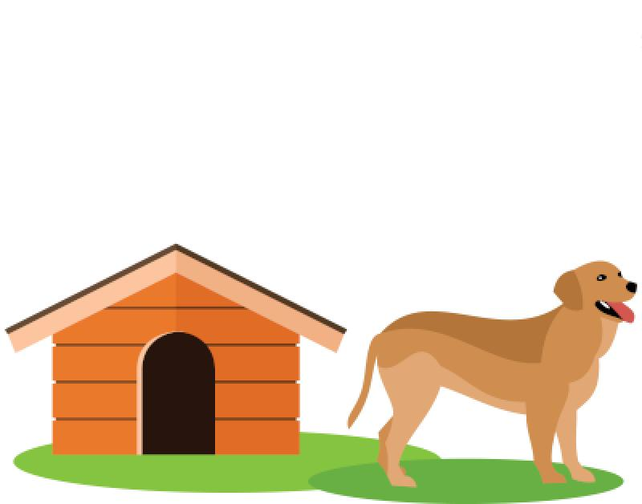
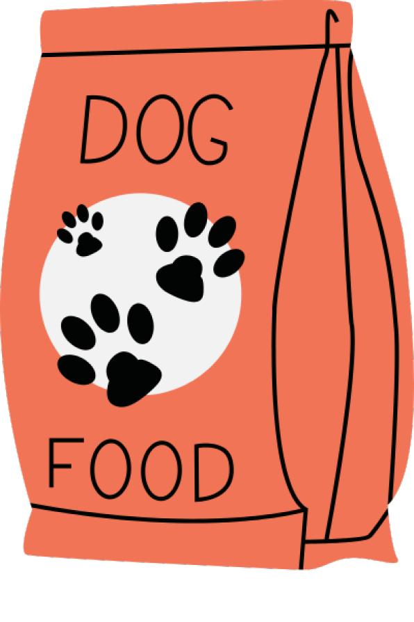

Como objetivo primordial, a organização busca encontrar e resgatar cães de rua, doentes, feridos ou abandonados e cães que sofrem maus tratos em condições críticas. O abrigo guarda os animais, alimenta, cuida e dá todo o que precisa, inclusive os cuidados básicos como água, comida, moradia e muito carinho e amor.
Sobre a ONG
Quando Giovana morava na cidade, possuía 25 cachorros em sua casa e 20 em outra, após cuidar, com muito amor e carinho de uma senhora sem família, Giovana recebeu uma casa de herança e enxergou isso como uma oportunidade de poder conceder aos cachorros um lar melhor, adquirindo uma chácara, que é o atual lugar da ONG.
Sua chácara já foi lar de quase 300 cães, atualmente conta com 160 a 170. A maioria dos cachorros possuíam doenças, deficiência física ou maus tratos; muitos deles são idosos tornando-os mais difíceis de doar. Ainda assim, nos últimos meses foram realizadas 46 adoções dos cães mais novos. Para que a adoção ocorra, as famílias passam por uma minientrevista (para saber se os cães serão utilizados como cão de guarda, vigia ou segurança, pois a Giovana repudia este tipo de ação) com a dona da ONG, antes mesmo de continuarem com o processo.
Objetivo

Desafios
Atualmente os animais comem em média 5 sacos de ração por dia, então contam com doações da comunidade para ajudar, fora as medicações e vacinas; tornando o dia a dia mais difícil do que já é. O local é limpo todos os dias para que o ambiente seja livre do foco dos mosquitos da dengue, doenças e carrapatos.
